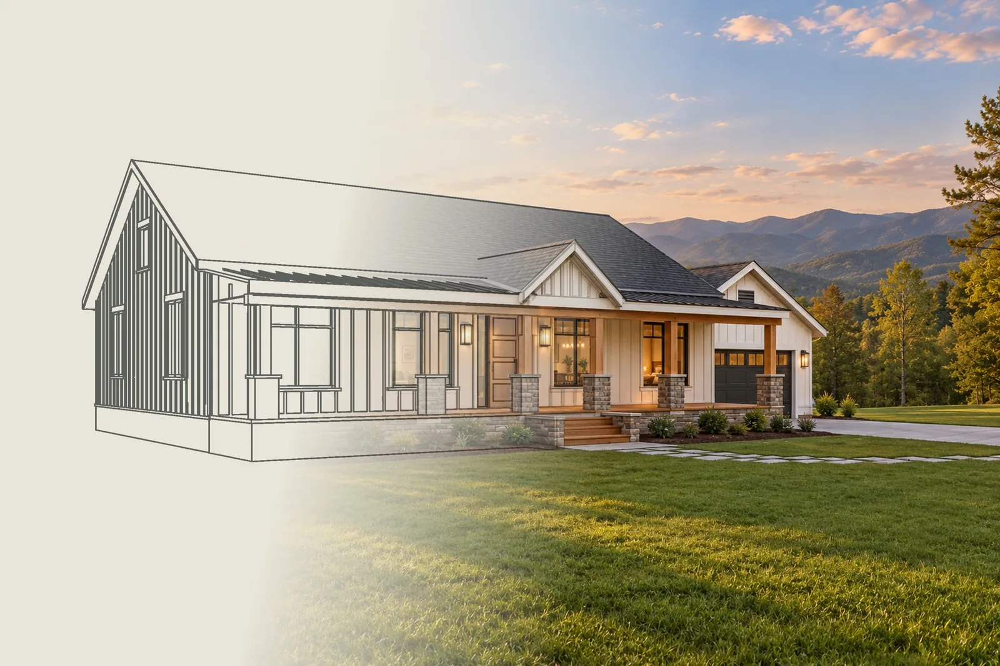
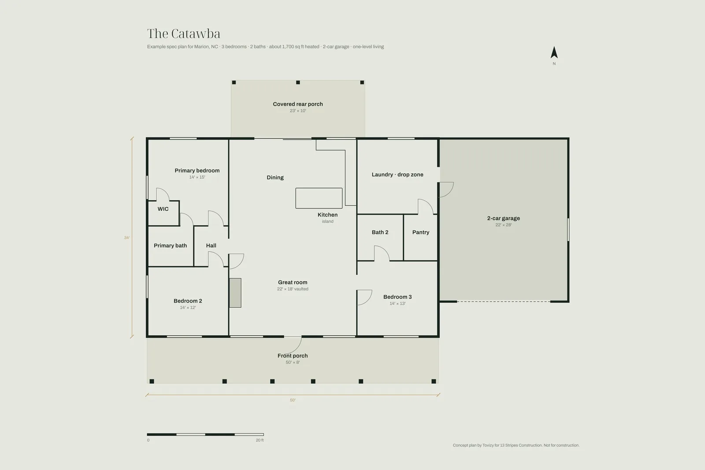
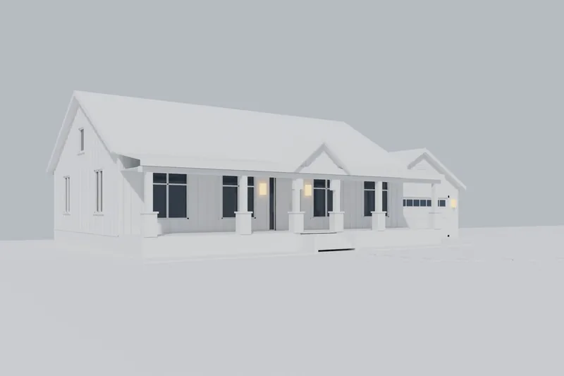
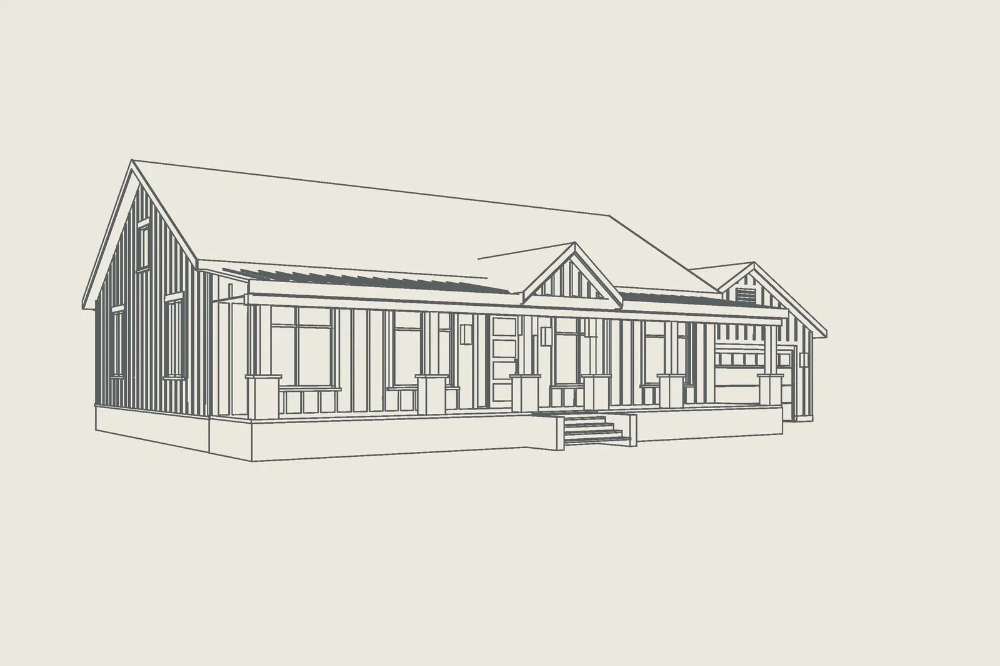
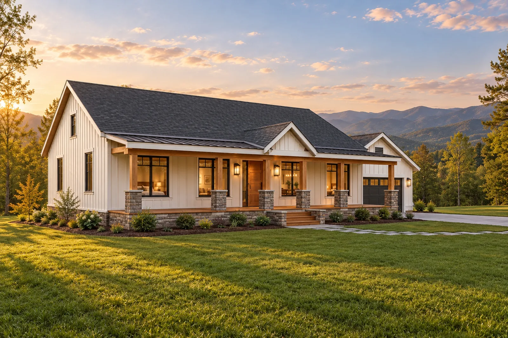

A spec home buyers can see before it is framed
We drew an example spec home for Marion, built it as a real 3D model and rendered it, for Johnny.
Example plan and 3D model by Tovizy
- Prepared for
- Johnny, 13 Stripes Construction
- Home
- The Catawba, an example spec home
- Place
- Marion, North Carolina
- Date
- October 2026
- Plan, 3D model and renderings
- Alex and Alexandra Lane, Tovizy

Johnny,
In your last email you mentioned a spec house, and that renderings could help it sell faster. We had no plans from you yet, so we drew one ourselves to show you what that looks like: The Catawba, a one-level mountain farmhouse of about 1,700 square feet with three bedrooms, two baths, a two-car garage and a porch across the whole front.
We built it as a real 3D model and rendered it on a level lot with the Blue Ridge behind it. Everything on this page comes from that one model: five views, the floor plan, two short films, twelve ways to show the same home and six layouts for a listing, a yard sign or a showing.
With your own plan we would do the same, so buyers can see the finished house from every side while the lot is still being cleared.
Alex LaneTovizy, 3D visualization studio
A plan, a 3D model, a drawing, then the light.
We drew the plan, built the house in 3D, drew it from the model and then lit it. Drag across the picture below to see the drawing and the rendering line up.

Our example plan
Three bedrooms and two baths on one level.

Our 3D model
Every wall, post, pier and step.

The drawing
Lines taken straight from the model.

The light
Materials, planting and Blue Ridge light.
Five views of the home.
The front in golden light and at midday, the lot from above, the entry at dusk and the back porch at sunset. Tap any picture to see it larger.
The plan behind the pictures.
We drew The Catawba for a level lot near Marion: everything on one floor, a great room in the middle, bedrooms on both ends. Every rendering on this page is cut from this plan.
- Bedrooms
- 3
- Baths
- 2
- Heated area
- about 1,700 sq ft
- Footprint
- 50 × 34 ft
- Great room
- 22 × 18 ft, vaulted
- Garage
- 2 cars, 22 × 28 ft
- Front porch
- 50 × 8 ft
- Back porch
- 23 × 10 ft, covered
This is our example. Your own spec plan works the same way: send it, even as a sketch, and we build it.
The same house through the year.
Every picture comes from the same 3D model, so the camera never moves: only the season and the light change.
Same home, same site, twelve moments.
The house and the lot stay exactly the same in every picture. Only the season, the weather and the story around the home change, so you can pick the ones that sell best.
Signature Dusk
Golden Hour
Peak Autumn
First Snow
Spring Bloom
Valley Fog
After the Rain
Starry Night
Cinematic
Editorial
Welcome Home
Native Garden
Six ways to put it on paper.
The same renderings, laid out for print, sales and social: the line drawing from the model, an architect's sheet, a magazine spread, a poster and a sales sheet ready to hand to a buyer.
Line to light. The drawing comes straight from our 3D model, so every line lands on the photograph.
Architect's sheet. Finishes keyed by number, datum lines and a title block, for architects and lenders.
Poster. The photograph sits in a window and the drawing runs on past its edges.
Sales sheet. Letter size, ready for an open house or the lot, with a QR code to this page.
Magazine spread. A full-page photograph, a headline and the facts of the home.
One year in one frame. Four seasons side by side, possible only because the camera never moves.
What we would do next.
Your plan, built the same way
Send the plan for your spec house, even a sketch or a phone photo, and we build and render it like The Catawba.
Finish options for early buyers
Siding colors, roofs and stone shown on the same house, so a buyer who signs early can see their version.
A page for the listing
A page like this one under your name, ready for the listing, the yard sign and texts to buyers.
Send us your plan.
Reply to my email with what you think, or send the plan for your spec house and we will start on it.